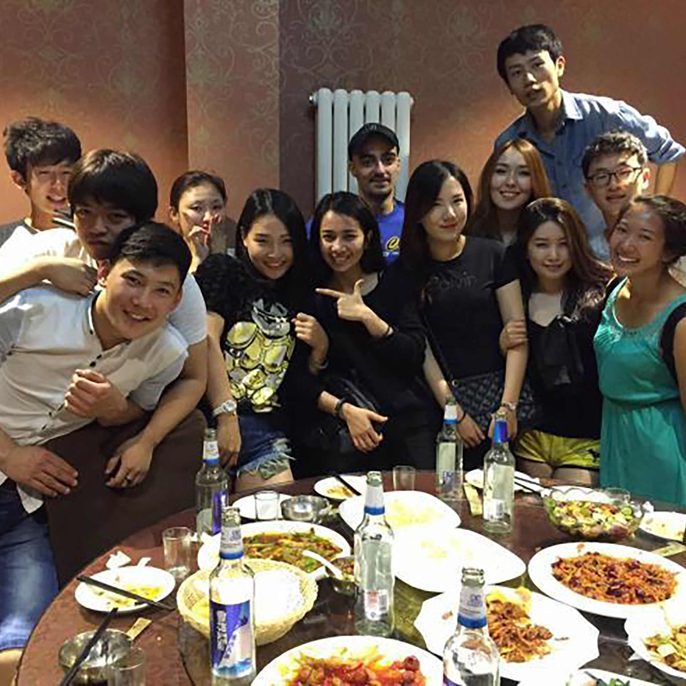

When Maya left China as a baby, her origin was as much a mystery as what her life in America would be. Sixteen years later, when she circles back to the rural town where she was found as an infant, Maya arrives as one of the millions of Chinese children, mostly daughters, who were either abandoned or hidden by birth families during more than three decades of the one-child policy. What little Maya knows of her beginnings comes from what she describes as a “few stapled pages of ambiguous papers” that constitute her birth record. These bilingual documents of Mandarin characters and English words went to America with her when she left Changzhou’s orphanage at nine months of age.
On these pages she sees that somebody guessed that she was three days old when she got to the orphanage, which makes the date of her birth September 10, 1996. No note verifies this hunch.
Those pages also name Xiaxi Town as the place where Maya was found. In which of the farming town’s 14 villages she was left isn’t noted. Nor can Maya be certain this is where she was born. Nevertheless, it’s where she’s come to learn about what her life might have been.
Maya spends time with girls her age in Xiaxi. As she tells them how her life intersects with their town, they tell her they don’t know much about abandoned babies. Perhaps a disabled child would be given up, one girl suggests; when the “family can’t see a future for that child, they will abandon a baby,” she says. Or when they can’t afford to care for a disabled child, she adds. But Maya was healthy and a girl, so gender likely played a significant role in her being left in this town.
It’s not easy for the Chinese girls to absorb Maya’s story. How could it be? This happened to Maya at roughly the same time that they were born in Xiaxi. Their families made a different decision than Maya’s did, even though it meant they’d raise a daughter and not a son. What’s even harder to take in is that an American woman who isn’t Chinese came to Changzhou and adopted Maya and took her to the United States to live. None of the girls knew this happened. Then to find out that Maya’s mom wasn’t married then – and still isn’t – only makes her journey seem more improbable and peculiar.
In China, when an unmarried woman gives birth, she rarely raises the child. Cultural traditions, family norms, and societal messages converge on the idea that marriage will precede motherhood in China. Being single and a mother is wholly foreign to Maya’s Chinese friends. Of course, “foreigner” is the word the girls use for Maya, even though her life began where theirs did.
Finding Connections
From 1980 through 2015, family planning regulations in Jiangsu province permitted married couples, whether urban or rural, to have only one child. This is why each of Maya’s Xiaxi friends is an only child. Other provinces set different rules giving rural families the opportunity to have a second child (after a certain number of years) if the first child was a daughter.
At lunch with the girls’ families, Maya’s friends give her hints about the unfamiliar dishes. It’s not like Chinese food she eats in America. When her friend Chen Chen takes Maya on a neighborhood walk, the two girls squeeze under one umbrella to shade themselves from intense mid-day sun. Chen blares Western songs from her mobile phone and sings along; she tells Maya she wants to be a Western singer. On their walk Maya meets Chen’s neighbor, Yuan Mengping, who is home from college for the summer. The girls’ grandmothers are close friends.
A few days later Mengping invites Maya to join her and her mother for a shopping trip in Xiaxi’s outdoor market. Maya leaves Changzhou, where she is staying, at 5:30 a.m. to meet them at the market before the day’s heat sets in.
Maya and I had come to this same market on her first trip back to China when she was seven. I wanted her to see the town where her life began. She was frightened as strangers approached, touching her and trying to talk with her. In my eagerness, I’d failed to appreciate what it would be like for her – for us – to walk together in a rural Chinese town. In the big cities we expected people to stare, but they soon moved on, and Maya did fine.
In Xiaxi’s market I found out what it meant to be blond-haired and white-skinned and walking hand-in-hand with a girl who is Chinese. Stories of children being kidnapped circulated on Chinese media even then. It wasn’t farfetched for people there to consider this a possibility when they saw us. Looking back, I wonder if strangers came close out of concern for Maya, wondering if she was okay.
Maya and I left quickly that day.
In my hotel room in Changzhou, I look at new video shot of Maya at the market with Mengping. The tears splashing on my cheeks express only the joy I feel. I see my teenage daughter at ease greeting people she knows as they pass by the bins of vegetables, cages of live poultry, and tubs of swimming fish that we’d rushed by nine years ago. Maya leans in to chat with a merchant – hardly the recoil I remembered from our time there. She and this woman laugh. Maya is not in any rush to leave.
When they finally leave the food market, Xiaxi’s main street is teeming with vendors, too. Though Maya isn’t in Xiaxi to search for her birth family, the people she meets want to take up this cause. They tell Maya they’ll do whatever they can to help find her “real” mother. Maya politely acknowledges each offer but doesn’t linger long on the subject. In few minutes, however, this topic is going to become all but impossible to avoid.
Mengping gestures towards the hospital across the street. “I was born here,” she tells Maya. “Maybe you were, too.”
Maya muses over the fact that she’s never given much thought to where she was born. After all, it never seemed possible that she’d unravel the mystery of her first three days. Even if someday she meets her birth parents, the shame they would likely feel in abandoning her would probably stifle such disclosure. Maya knows enough about the Chinese way of “saving face” that she wouldn’t ask such questions as a new relationship took shape.
A few minutes later the girls enter the hospital with Mengping’s mom trailing behind. Maya doesn’t expect clues to surface, but she’s open to whatever happens on this unexpected visit. Inside they meet Mr. Wu, a man in the white coat of a hospital employee. He tells them he’s worked at the hospital for 32 years. After hearing Maya’s story, Mr. Wu leads them up several flights of stairs to the small third-floor room where the birth records are kept. Mengping and Maya watch from outside the room as more white-coated people join Mr. Wu in paging through dust-covered books piled haphazardly on tilted shelves.
Later that day Maya recounts this scene for Jennie, her fellow adoptee and longtime friend. Like Maya, Jennie is back in China to meet girls her age in the town where she was found, Xixiashu. “Mengping explained a bit about me to those we met. The hospital people said the usual things like ‘You look Chinese, but you don’t speak well.’ They asked my age and my birthday,” Maya tells Jennie.
Throughout this trip, Maya and Jennie often compare notes in the evenings. Tonight it’s Maya’s turn to tell: “Then all of a sudden a group of staff people goes into a room,” she says. “It’s a mess with books everywhere, and then without consulting anyone they start flipping through books to see if I’m on the pages. It was a sweet gesture, but after a while it turned out their paper records go back only to 1997.”
Maya and Jennie were born in 1996.
Like Maya, Jennie arrived at Changzhou’s orphanage early in September that year. The birth record she brought with her to America states that when Xixiashu police brought her to the orphanage she was one day old. About a week later Maya arrived. The girls flew to the United States together, each with her new mom. In August 2013 they returned together to China as 16 year olds.
“So after the hospital people couldn’t find birth records from earlier than 1997, we talked for a while and then we left the hospital,” Maya says, continuing her recreation of the day. “Then, a few minutes later Mr. Wu runs out to us in the street and tells us they’ve found computer records of babies’ immunizations. He wants us to come back in to check those records. So we go into a different room where I watch them scroll through dates in September of 1996. A bunch of babies were born about the same time I was but none of them has a mother listed. It’s just the baby’s name and gender. So we don’t find anything out about me, but it was nice they were willing to help and were so engaged. Oh, it was hot, too, but it was a good day, and I enjoyed it very much.”
Maya thanks these nurses and doctors for their interest. After engaging in this search, they want Maya to find her birth mother and suggest she visit with the police. Surely they can help Maya.

Based on a visit she made to Xiaxi’s police station when she was seven years old, Maya knows the police don’t have any information to offer. But she doesn’t say this now. When the girls visit their town’s police station, the officers are cordial but can add nothing to what Maya and Jennie’s “few stapled pages of ambiguous papers” tell them.
Building Bridges
Maya shares photos from her American life with her friends in Xiaxi. The Chinese girls are intrigued by how many of Maya’s friends don’t look like her. Maya’s exposure to racial diversity contrasts starkly with the Chinese girls’ experience of interacting only with people of the same ethnicity.
“So what are you,” the girls ask Maya, “American or Chinese?” The girls in Xixiashu ask Jennie this, too.
As transnational adoptees, Maya and Jennie are accustomed to hearing this question in America. There it’s embedded in the country’s multicultural mindset and in the context of its racial and ethnic history. Figuring out how to explain their sense of identity to girls who’ve grown up in China feels very different – and more difficult. So the girls compare notes on how best to convey to their Chinese friends how they can be American and feel Chinese at the same time.
Jennie and Maya choose their words with care. Unlike Maya and Jennie who’ve grown up instinctively weighing cultural differences among those with whom they interact, the Chinese girls don’t have daily exposure to the issues of multicultural living. Maya and Jennie simplify, as much as they can, ideas they know are complex, while offering nuances that this topic demands. They do not want the essence of what they say to be lost in translation.
Mandarin isn’t ideally suited for conveying this concept that is largely a foreign notion to many Chinese. (China is a multicultural country with 55 recognized ethnic minorities, each with its own cultural traditions. Still, the vast majority of people in China are of Han ethnicity, and multiculturalism is not seen at the core of China’s national identity.) To translate multiculturalism – one long word in English – requires a lengthy string of characters. A few more characters kick in if “identity” is added to it. Since there is bound to be ambiguity in what their Chinese friends hear as Maya and Jennie try to explain, the Americans do all they can to lessen any misunderstanding.
Still, it’s hard for the Chinese girls to grasp fully how Maya and Jennie frame their personal identity – as girls born to Chinese parents, daughters raised in White families, and citizens of a diverse nation. Jennie’s life story carries the overlay of a Jewish upbringing. She took a “birthright” tour to Israel before returning to China. Hebrew is her second language – or third, if you count the French she studied in school. She doesn’t speak or understand Mandarin.
Similarly, it isn’t easy for the Americans to step outside of their lives to appreciate the comfort zone of Han identity in which their friends live. In China, such nationalistic identity can supersede the American tug for individualistic self-definition. Also, Maya and Jennie will likely explain their identity differently in two or three years when somebody asks them again. By then they will be in college, living apart from their families. Without their families to let on that they are adopted, layers of complicating and clarifying moments are bound to occur in which their Chinese features will lead others to make assumptions or comments. How they react and how others’ words make them feel will stretch their sense of who they are as individuals.
For Maya and Jennie, their friends’ queries come at another juncture in their young lives. For the first time these adoptees are surrounded solely by people of their ethnicity. In Shanghai, a few days before the Americans arrived in their rural towns, they walked in the city on their own. Without their parents, they blended in. Or did they? Jennie told of her “big surprise” as she looked around and saw that everyone was Chinese. “I know I should have expected this because we are in China,” she said to Maya, “but it didn’t feel real until I was here. I mean, I’ve been to Chinatown in Boston and lots of the people there are Chinese. But for some reason this feels completely foreign, completely new.”
The longer Maya and Jennie are in China, the more American they feel. The juxtaposition of having the look of an insider but the feeling of an outsider accentuates their psychological distance. They talk of coming to terms with their difference from their Chinese friends but realize how this awareness magnifies the divergence in their lives since birth. Being here also opens windows through which Maya and Jennie are able to think about their bi-cultural lives – and continue to frame their identity – in ways they haven’t done in America.
“My family says I’m Chinese-American, but am I really?” Jennie asks rhetorically when the girls revisit this topic in Changzhou. Jennie pauses. “I definitely feel I’m more American because I’ve grown up in an American family.”
Maya nods before mentioning the descriptor she hears people use with her in America which bothers her every time. “People say I’m yellow on the outside and white on the inside. I don’t like it. It’s kind of like saying I shouldn’t be Chinese,” she explains. “Maybe if you mush the inside of a banana and mix it with its skin then the description makes sense.”

Like other Asian Americans, Maya and Jennie encountered bullying related to their race – name calling accompanied by slanted eyes was perhaps the most common. When she was eight years old, Maya joined other Chinese adoptees at a workshop designed to give them a safe space to share feelings and experiences and acquire skills to cope with those inevitable moments when comments sting.
“Yeah, the girls don’t know how to place us. It’s like to them we’re not Chinese and we’re not American. So what are we?” Maya responds. “It makes me feel kind of like I don’t know if I fit anywhere.”
“Exactly,” Jennie says. “I very much identify with being American, but I hear the girls here say I can’t possibly be American. But I’m not Chinese, so then I kind of want to say, ‘well, if I’m neither, then what am I?’”
Soon after Maya and Jennie are back in America, they start their senior year of high school. A few months later each submits a personal essay with her college applications. Not surprisingly they both write about self-identity as seen through a lens widened by their shared journey “home” to China. Two years later, as a sophomore at Vassar College, Jennie revisits this topic in a lengthier reflective essay. By this time, she’s able to look back at why it was so tough for her to fit in with Chinese-American students at her suburban high school – and why it hurt so much when she couldn’t.
Claiming My Own Identity
Upon returning from China I became concerned with discovering my identity. Growing up, I wanted to fit in with my friends and peers. However, I couldn’t feel fully American because of my outward appearance and birthplace, but I didn’t fit in as Chinese because of my American upbringing.
Once, an Asian friend described me as “not really Asian.” No racist comments had ever made me feel so alone or dejected as hers did. I felt like a fraud. Similarly, when I was in China, I stood out from the local girls. I was an outsider to both Chinese and Americans.
My Chinese identity was forced upon me by a xenophobic society that refused to accept that I could look different and still be authentically American. However, in trying to fit in with my “own kind,” I was similarly rejected due to my “whitewashed” childhood.
Now, I am beginning to believe that I don’t have to be defined by socially restrictive categories. I have been trying to accept my confusing mix of identities and come to terms with their dynamic nature. I am learning that I don’t need to hide or forsake any part of myself to fit in. Realizing this doesn’t leave me feeling entirely content with the ambiguity of what it means to be a Chinese-American adoptee, but I do feel I’ve moved closer to being comfortable with the uncertainty.
The stages of Jennie’s personal exploration mark the steppingstones over which many transnational adoptees walk in exploring their self-identity. After high school, when most are no longer living with their Caucasian families, these adoptees absorb how others on their campus or workplace see them as Chinese. As teens, transnational adoptees typically resort to “I’m just American” to swat away anybody encouraging them to examine their cultural and racial heritage. But time living apart from their families and friends triggers in many the desire to head back to their birth country, join a transnational adoptee group, or simply learn more about their homeland. This leads some to begin a search for their birth family; yet this urge to seek biological roots doesn’t diminish their other search –for a sense of identity in multicultural America.
Permeating Boundaries
The first nine months of my life are a mystery.
Back in Xiaxi I experienced what my life could have been. I was overwhelmed by simultaneous feelings of deep connection and unbridgeable distance.
“So, what are you?” the girls asked me. “You look Chinese on the outside, but you are American on the inside.”
If the substance of my being is not Chinese, I might as well be white. Once content with “Chinese American,” now I was hit with its vagueness. Where do I belong between being Chinese and becoming American?
“You are so lucky …” the Xia Xi girls would say, “All we get to do is study.”
I felt guilty about my “luck” and the truth in their words. Still, their idealistic views about America and the ease of my life perplexed me …. I realized how their understanding of “smart” contrasts with mine … being smart is achieving a high-class ranking.
We talked about growing up, gender, equality and relationships. As a girl born in Xiaxi and living in America, I was the most foreign person the girls had ever met. Being with them gave me deeper appreciation for the diversity that my life in America gives me.
Their words “real mother” sit heavy in my mind. Even if I’d spoken their dialect fluently, I am not sure I could have explained. Yet, it was in the welcoming care that countless strangers showed me that I found home in Xiaxi and that was enough.
Maya’s presence in Xiaxi shatters the residents’ accustomed silence about child abandonment. Her presence reminds them, too, of the primary role that gender likely played in sealing her fate. When Maya was born in September 1996, a couple in Xiaxi could raise either a daughter or a son, not both. Exemptions existed, though not many, so when a family had an “out-of-quota” child they would have to pay a crippling fine, the “social maintenance fee.” They also invited the possibility of other penalties. A father could lose his job by raising a second child or a mother could be forced to undergo sterilization. Perhaps Maya’s birth family feared such repercussions and, believing they needed a son, let this daughter go.
Every girl Maya and Jennie meets is an only child. As they listen to Maya and Jennie’s stories, there is an undercurrent of knowledge that their families made a different decision when they were born. Occasionally, the topic rises to the surface, and the girls talked about how and why their lives diverged so soon after the adoptees’ births.
Centuries-old beliefs, customs and attitudes provide the lens through which the Chinese girls see the world and their places in it. TV shows and music are their windows to America. Few have traveled further than Nanjing, the provincial capital about 80 miles away. Maya and Jennie have a very different global awareness. Each has traveled to another country and widely in their own like many Americans their age – and many prosperous urban Chinese, too.
Growing up in rural China does not conjure visions of distant journeys. Still, the dreams are changing for this younger generation. After all, their parents’ generation went great distances inside of China to find work in major cities, and many in these girls’ generation still do. Among those bound for college, foreign travel is commonplace. Mengping, a college graduate from Xiaxi, dreams about going to Japan or America. Jennie and Maya are in Changzhou when Tiara, whose mother teaches English in Xiaxi, departs for America for the first time; she’s going to study at Syracuse University. Each year several hundred thousand of Tiara’s peers make a similar trip.
Sharing stories isn’t easy for the American and Chinese girls given their native languages. Maya studied Mandarin in high school, but dialect and the girls’ fast-spoken words toss comprehension out of reach. Even if Maya were fluent, the girls’ different cultural orientations would draw them into corners of misunderstanding. The Chinese girls try speaking to Maya in English, which they are required to study in school. Verbal abilities vary, and Maya’s Mandarin isn’t strong, so only simple notions get through. Even with a translator’s help, subtleties can’t traverse their cultural impasses.
Welcoming Care
When Maya was contemplating a return to Xiaxi, she was nervous about “shattering the stable but fragile image I had created in my mind about my beginnings.” At the start of her first drive to Xixiashu, Jennie tells her mom, “It feels kind of scary because I guess I always had in mind an idea of what my life might have been like, and being there will make that picture change. It’s exciting, but scary.”
Each year hundreds of adoptees return to China, many to search for their birth family. But Maya and Jennie aren’t in China to search for biological connection. Instead, in befriending girls from their towns, each is layering the textures of being in a place with its people to the evolving mix of her transnational identity.
Adoptees Write Their Stories
Maya and Jennie are part of the wave of adoptees that in reaching adolescence are returning to China, each for their own reasons. Some go in search of their birth family; others go to study. Of the adoptees who don’t go back to the country where they were born, some create audio/video stories or do photography projects or write about their evolving sense of identity as they move through adolescence. More and more of them are sharing these reflections online, including on websites such as Our China Stories.
Jenna Cook and Lily Rau, whose stories are below, are adoptees who wrote about why they went back to China and what their experiences taught them.
Maya has a sense of belonging when she’s in Xiaxi, even if being there amplifies her feelings of distance from its residents. As the town’s main crops, flowers and trees are ubiquitous in Xiaxi. Maya feels a visceral connection between this farmland’s vegetation and her passion for environmental advocacy back home. On her last day in Xiaxi, Maya fills a container with soil to bring back to America.
One evening Maya and Jennie each contemplate the idea of growing up in the town where she was found. Maya says she feels “at home and comfortable” on her visits, but she can’t see herself “living there in my daily life.” Most distancing for both Maya and Jennie is their Chinese friends’ singular focus on achievement in school. Doing well in school matters a lot to Maya and Jennie, and each girl does well, but this is not the only rod by which they measure self-worth or their ability to succeed. By now, the Americans know that this approach isn’t the Xiaxi girls’ choice, either; their families, teachers, and cultural milieu exert intense pressure on them to do well in school. Societal messages underscore that academic success is a necessary first step in their obligation to care for those who raised them. Top-level status at school becomes a stand-in for self worth. The shame of failure burns deeply inside as test grades are shared publicly in classrooms – and they have performed poorly.
In activities and service projects, Maya and Jennie learn and find pleasure. Yet the Chinese girls haven’t had the opportunity to participate in out-of-school activities, in part because those activities are not valued. The Chinese girls spend their time doing what improves academic performance and prepares them to take the critical national entrance exams. As they tell it, learning is about reciting back to a teacher what the teacher tells them. If there is no test – or a score doesn’t matter – learning is less likely to happen. Sex education is a good example. When it’s taught in school, which isn’t often, test results don’t matter. Nobody takes the test seriously; one girl recalled her teacher giving students the answers.
“For them it is school and homework pretty much all the time,” Maya says. “I mean school is a lot of my life, but not to the degree it has to be for them. They’ve got greater pressures to do well enough on tests to get into the next level of good schools. My life would be harder here.”
“Definitely,” Jennie says. Girls in Xixiashu share similar circumstances and attitudes. They want Jennie to tell them about her school, which Jennie says was tough to do given their differing orientations to learning. “They talked about America in ways that made me feel like they think everything there is perfect and sweet and amazing, when I don’t think that’s the case,” says Jennie. “School is difficult for us in America, too.”
“Yeah, it makes me feel guilty but also sad and kind of angry that they think our lives are so easy,” Maya says. “It leaves me feeling a bunch of emotions.”
The girls’ family situations surprise Maya and Jennie, too. In Xixiashu, paternal grandparents raised Jennie’s friend Jin Shan in her early years – from the time her mother and father left as migrant workers when she was seven months until she was 10 years old.
When another Xiaxi girl’s father died, her mother left the family. They’d lived with the husband’s family, as most couples do in rural China, and her uncle’s family then raised her. When a different girl’s parents were divorced, she was quite young, and similarly her father and her mother left, heading in separate directions. Her paternal grandparents filled in. Neither girl has seen or heard from her mother since the day she left.
Mostly it is grandparents who care for the millions of children left behind when their parents migrate from farm towns for jobs in the city. Hearing their Chinese friends talk about their family instability gives Maya and Jennie reason to reassess their own transplanted lives. Their beginnings were tough, yet Maya and Jennie experienced much greater stability during their childhoods than many rural Chinese children do. Learning this can’t erase nor diminish their own feelings of loss arising from their early abandonment, but it has a way of shattering the “fragile image” that these adoptees had in their minds of what their lives might have been if their birth families had kept them.
Saying Goodbye
When Jennie and Shan first met, Shan had just learned that her gaokao exam score was too low for her to be admitted to an academic university. This had been her family’s dream for her – and her parents’ expectation. She’d let them down and had internalized the shame she’d brought her family.
Shan speaks in English to Jennie when family members are nearby so they won’t understand. Telling Jennie about her gaokao disappointment is one of those times when her English lessons come in handy.
“They won’t be proud of me,” she tells Jennie, as her mother and grandmother sit next to her. Shan has not done what her parents need her to do. As an only child, the weight of failure is a heavy burden for her to bear, as it is for millions of China’s only-child sons and daughters. When China’s economy began to grow, her parents were part of the mass exodus from rural towns. They worked for nearly a decade as migrant tailors in distant cities and poured their earnings into a new and successful business in Xixiashu. They bought an apartment with air conditioning and modern appliances, and they drive sleek new cars; all of this marks success in their generation’s “Chinese Dream.” Now it is Shan’s turn. Sadly for her, this dream now requires a college degree.
If her gaokao score had been higher, Shan would be honored as the first in her family to go to college. Her mother made it through middle school, but her father, who was from an extremely poor family, left school in the primary grades to farm. Now Shan’s low score vanquishes the long-held hope of raising the family’s status and improving its economic well-being.
Jennie’s visit is a welcome respite for Shan, who buries disappointment in a whirlwind of activities with her American visitor. All the while she anxiously awaits word of her placement at a vocational university. A few days before Jennie leaves for America, Shan is eager to share good news. “I’m so happy because I checked the school results, and I’m enrolled,” she tells Jennie.
Shan’s been assigned to Nantong Vocational College, a school of 18,000 students in which tuition and fees will cost her family about 8000 RMB ($1,250) for each of the three years. There, she’ll learn a trade. Soon after Jennie departs, Shan and her father drive three hours northeast and cross the Yangtze River into Nantong, a city of seven million people. In her dormitory, six bunk beds and desks are affixed to the walls of a narrow room. Her roommates, plus one more, are the only first-year women majoring in construction at Nantong. Construction mostly attracts men.
Before Shan found out she’d be at Nantong, she knew she would major in construction. Jennie asks what it’s like in China for women to work in male-dominated industries like construction. Is Shan worried about finding a job? What will it be like being a woman working mostly with men? It might be difficult for a lot of women, Shan acknowledges, but she’s certain it won’t be this way for her. For starters, her parents sell steel for local construction, and they’ve said that after she graduates their business acquaintances will smooth her path to a well-paying job. With China in an unprecedented building boom, jobs will be plentiful, Shan says, and since she won’t married when she graduates she’ll be able to travel to construction sites for work.
Just outside Changzhou’s core city, giant cranes tower over fields of unfinished high-rises, giving Jennie little reason to doubt Shan’s confidence about her job prospects.
“Remember how I used to tell you how I wanted a job in construction?” says Shan after learning about her vocational college assignment. “Now the first step of my dream is coming true. I believe if I keep going I will have a great achievement in my study, and my dream will be waiting for me.”
Three years later, Shan’s dream is not waiting for her.
After Shan finishes school, her father tells her to move back so she’ll be close to her family. As their only child, she accepts that it is best to be nearby. Three days after graduation she is home. Her father is experiencing chronic health issues, her aging grandparents need attention, and her parents’ business is slowing. About a month later Shan is hospitalized for an operation. Amid all of this, her family is realizing how their fast-paced, intensive efforts to get rich quick exacted a toll on their health. Harsh living conditions during their migrant years combine with the stresses of operating a competitive business seven days a week. Then there are the pollutants in the air they breathe and the water they drink for which there is little public accountability.
In her Nantong internship, Shan was one of just four women working on a primary school construction site. She saw what it’s like for women to do this kind of work. “I couldn’t do a lot of the construction work since I don’t fit in,” she says. In most of her photos, she’s doing paperwork in an office. “When we’d eat together, the men smoked and drank a lot and I couldn’t stand the smell,” she says.
Shan’s wariness stands out as she talks about her new reality. “Men are more likely to get construction jobs,” Shan tells Jocelyn Ford, the videographer who followed Jennie and Shan in 2013. Three years later, Jocelyn is back to visit Shan. “Construction workers don’t feel girls are convenient” is Shan’s way of saying that men don’t feel women belong on the work site. “They fit in the office more.”
Shan says she doesn’t regret majoring in construction but doubts she’ll ever earn money doing this work. “Women aren’t as strong as men,” she asserts. “It’s also hard to be a homemaker and work on a construction site that is far away. When a woman marries, she has kids to care for so she cannot work like a man. She is with her family doing chores. The men are the pillars in the family. They can spend less time in the family as long as they have fat checks. Chinese society is still a male higher class and a female lower class. Chinese grandparents would be upset if the daughter-in-law spends less time in the family.”
Only one of the women who majored in construction at Nantong in Shan’s class found a job in that field, she reports. “The girl’s family connections helped her, but her salary is lousy,” Shan says. When Shan looked for a job in Changzhou, she didn’t ask her parents for help, nor did they reach out to assist her. By then she’d realized that her parents’ associates are neither loyal nor influential. So Shan applied to be a classroom monitor, but the employer found her too immature “to stand the pressure” – meaning she could not handle angry parents. She settled on a clerical job and works in a tiny cubicle processing paperwork for car sales. She likes the people she works with, but earns a small salary (roughly $300 per month) and lives in an apartment with her aunt, who is also in poor health.
When Shan visits her family, the inevitable topic is the search for suitable suitors. “Suitable” implies a young man poised for a prosperous future and from a well-off family with the financial means to purchase a home for the couple. Marrying a suitable man is Shan’s next opportunity to help her family gain in wealth and stature. Her family arranges dates for her, but no relationship has taken hold.
Shan is stoic and steadfastly pragmatic about her life. “I believe that the best for me is always at the last,” she says, as the topic turns to the absence of a boyfriend. Over and over again she’s demonstrated the capacity to adjust her dreams to changed circumstances. Like her parents, she simply accepts that disappointment is a routine part of life. People there refer to it as chiku or eating bitterness.
When Jocelyn and Shan visit her parents in Xixiashu, one hears despair in their voices. “We have no connections for her. She needs to make the choice,” her mother says. “We are old now. What can we do? The economy is slowing down. It is difficult to do any business. We’ll just live our life. We go along. You can’t change it.”
On this visit, we learn that it was Shan’s parents, not her, who chose construction as her vocational major. Her choice would have been to teach kindergarten or be a nurse, but those jobs don’t have the potential of earning a better-than-average wage. With her strong sense of filial duty, Shan complied. Her parents hoped her life would be easier, better and richer than theirs. Their desire for her well-being intersects with theirs. Especially in rural towns, China’s centuries-old tradition of filial piety holds that the well-being of aging parents is the obligation of their children. Usually the financial responsibility belongs to a son while his wife handles caregiving. As an only-child daughter, Shan is one of the hundreds of millions of children saddled with such expectations, but lacking a roadmap to explain how to do it. Since her grandparents raised her, Shan feels an obligation to take care of them, too.
Shan’s nominal age is 24 (In China, newborns are considered one year old at birth; at Lunar New Year, one year is added to their age. Since Shan was born on January 10, 1995, she is 22 years old, but her nominal age – the one that matters when it comes to marriage – is 24.) Her parents expect her to be married when she is 25. Shan’s timeline differs slightly: engaged at 25, her wedding at 26 or 27, and a mother by 28. Recently Shan revised her one-child-is-enough policy, telling Jocelyn that having two children seems better “so they won’t be lonely.” But not two sons, she says. “I’ll collapse if I have two boys. That would be economic suicide; we’d have to prepare for a house and car for each [so he could marry]. So if my first is a boy, I do not want a second one.”
As marriage looms, Shan is adamant about retaining her financial independence. “You cannot live on a man,” she asserts. “If he isn’t in the mood, he might not give me money.” She’ll be a “female strong man,” as the Chinese phrase goes. One day she’d like to operate a store where she’ll sell alcohol, cigarettes and tea. She hasn’t shared this new dream with her parents. She fears they will disapprove and then this dream, like others before it, will disappear.
“Have my shop. Have income. Travel at will. Not have to listen to anyone else, and it will all work out.” Shan says. A pause. “A girl’s fantasy,” she says. “Ha ha.”
Motherland
Mengping believes in love. She is still seeking it even as the time draws near when her family expects her to marry. Love doesn’t factor into their equation: female 25 + male 26/27 = marriage in rural China.
“My grandma, my parents, my uncles, they think I should get married,” Mengping tells Jocelyn when they visit in Shanghai in 2016. “I am a girl. I am 25 years old. So they think it’s time for me to get a boyfriend and get married and have a baby. I think it is a little early. I want to enjoy my life.”
If she waits too long, she – and her family – knows that the best young men will already be married. In Xiaxi, girls who finished only primary school are married and have babies; among her high school friends, many are married, but less so her college friends. “Education will change the choices in life and broaden your sights,” she says. “You’ll understand that life is not only about marriage and kids.”
“I get tired of speaking my mind,” she says, alluding to the pending topic of her marriage. “They can’t understand why I don’t want to get married.” My uncles worry more than my parents do. They always say I should meet boys by going on blind dates. So I had three or four matchmakings, but the boys are fat, and I don’t like fat guys. They’re lazy. If they’re fat before marriage, then after marriage they will be fatter and fatter. I like someone who is tall and thin. He should be mature and take responsibility. I don’t like childish boys.”
Mengping let her mom know she didn’t like any of the young men whom her uncles found for her. “My mom understands,” she says. “She thinks it is my life, and as long as I don’t regret my choices that’s fine.” Not so her father: “I don’t tell my thoughts to my dad. He wouldn’t understand me.” Or to her grandmother who, as Mengping puts it, “sees a man and thinks I can marry him.” She jokes with her grandmother that “as long as it’s a man and he’s alive, it’s okay for me to marry him.” Her grandmother is 79 years old. “She doesn’t know how many more years she has and she wants to see me get married, have kids, and live a happy life,” she says.
Mengping’s nickname is Sunshine. It’s her WeChat name and her way of reflecting her usually buoyant, optimistic spirit. She’s determined to make unconventional choices, such as moving on her own to Shanghai after she finished university in Changzhou. “My family didn’t understand why I came here,” she tells Jocelyn. Still, they didn’t stop her from taking her first job in a distant, huge city, unlike Shan’s family who demanded she be closer to home. Mengping is devoted to her family, and her mom is her closest confidant; she tells her just about everything that happens in her life.
Mengping is out of step with many of her contemporaries since money is not her driving ambition. To her, finding meaning in life is what matters. “Some friends from college are lost,” Mengping says. “They think money; some married for money. They say it is common to get married and then husbands find mistresses and they divorce. But I believe in true love. If I have little money, I can live with that. It’s easy for people to give in to money. I haven’t saved up a lot [from my job in Shanghai], but I learned precious lessons there.”
The lessons this city taught Mengping tarnished her trust in people but strengthened her resolve to stay rooted in beliefs that shaped her life in Xiaxi.
When Jocelyn visits Mengping in Shanghai, she’d just quit her job. Two years earlier, she had arrived in this mega-city with a passion for golf, despite never having played it. As a saleswoman in a golf store, she earned a small salary, less than $800 a month, including one raise. She could only afford dormitory-style housing shared with other rural workers.
“I learned you can’t treat your colleagues like your friends,” she says. “You can’t tell them things. We might look like we’re friends, but we are competing with each other all the time.” Talk about a customer and your colleague might steal that customer – which happened to her, twice. “At work, there are no true friends,” she says.
When an ethical issue arose, she had no one to turn to for guidance. Should she tell her boss that she thought a fellow worker was stealing from his shop? She didn’t and then felt guilty for not doing so.
There were men customers who asked female salespeople for personal favors. She didn’t know this happened. “Half of the girls went out with the guys, and they sold more stuff. Men bought them diamonds and clothes.” Some men asked Mengping for her WeChat. “They wanted me to go out for drink or lunch. I said no.”
She didn’t tell her mother about this.
“The most important thing I learned is that so many people in Shanghai are very rich,” Mengping says, as she and Jocelyn talk in a coffee shop in the city. Living amid such wealth for the first time made her realize the value of holding onto her rural roots. “This is something we don’t belong to but still we can’t lose our own sense of self.”
Feeling defeated, Mengping tells Jocelyn she’s ready to go back to Changzhou. This decision thrilled her family.
“What is your dream now?” Jocelyn asks.
“I don’t know my dream now,” Mengping replies. “I lost my way this time, so I leave golf now. I want to find something meaningful to do. I think it is meaningless to go to the shop and then go back to my room. I was like a machine.”
What she didn’t lose in Shanghai is a sense of who she is. Circumstances tested her resolve, and she did not barter away what’s most important to her in exchange for wealth. “I am happy that I can stay true to myself in many other cities and towns,” she tells Jocelyn.
When she marries, Mengping intends to have a meaningful job outside the home and a husband who “helps me do housework.” Having a job is not so much about earning money as it is about her sense of self. “Many women lose themselves after they have children,” she says. “They live for their husbands and their kids. I wouldn’t do that.”
Mengping describes time she spent with the American adoptees as “a magical wonderful journey and a big and precious experience for me.” In meeting Maya and finding out about her life in America, Mengping’s confidence grew in her own adventurous spirit. Through video Jocelyn took of their conversation, Mengping tells Maya how “your life attitude changed me.” Mengping describes Maya’s life as “very colorful” and remembers how that summer’s visit let her “know that women can go so many places, and we can be ourselves. I always thought myself a very ordinary person, but you always say I am very good.”
Several years after these girls’ paths crossed in Xiaxi, Maya speaks at New York’s Museum of Chinese in America about how much their time together meant to her. After her presentation, including a reading of her essay about what being in Xiaxi meant to her, listeners want to know more.
How did being in Xiaxi make her feel?
“I felt completely relaxed, and I was really excited to see the girls each day,” Maya begins. “I look kind of like them, but at the same time I noticed differences, like when I spoke and in my mannerisms, in how I hold myself, how I eat and greet people. It was weird to feel so very settled in this place where I’ve never lived.”
Asked how her journey affected her evolving sense of personal identity, Maya describes how “finally learning things I’d never known” about the place she is from “forced me to think how I wanted to identity myself.” She explains that when she was younger “there was a part of me that didn’t want to be Chinese” and how she’d gradually embraced this aspect of whom she is as she learned Mandarin, performed Chinese dance, and then spent time with the girls in Xiaxi.
“Some people still ask me which one are you, Chinese or American? What’s the percentage of each? I don’t think this is the right question. I am okay now with the Chinese part of my identity, and I’m able to talk about it openly and with more people.”
“I’m at a good place.”